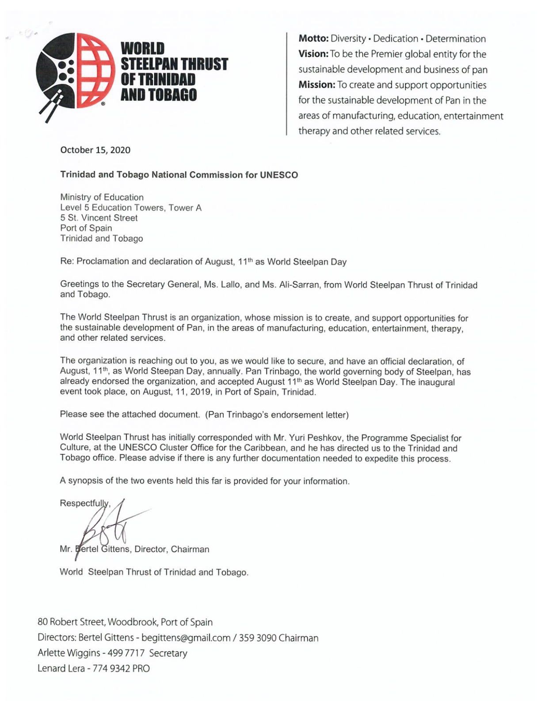

THE WORLD STEELPAN THRUST OF TRINIDAD AND TOBAGO
The mission of The World Steelpan Thrust of Trinidad and Tobago is to create and support opportunities for the sustainable development of the steelpan in the areas of manufacturing, education, entertainment, therapy, and other general national development initiatives.
The WSTTT was incorporated on 6th December 2019 and registered as a not-for-profit entity later that same year. Its registered office is situated at 80 Roberts Street, Woodbrook, Port of Spain.
It received endorsement and support from the Executive of Pan Trinbago on 6 January 2020.
THE WSTTT WAS ESTABLISHED TO PURSUE THE FOLLOWING INITIATIVES:
• To increase the exposure of Trinidad and Tobago Steelpan through live concerts, professional digital recording, and archiving of all such scheduled events both locally and abroad. • To ensure that the national steelpan is properly branded and identified as originating from Trinidad and Tobago. • To advocate for better and stronger copyright controls to properly protect artistes and their creative output. • To set up workshops for the purposes of refurbishing, tuning and re-tuning the steelpan instrument. • To work towards the standardization of the steelpan with the assistance of pannists, musical arrangers and other stakeholders, so as to achieve a more cohesive approach to training and certifying all pannists, especially the interested youths of Trinidad and Tobago. • To develop local steelpan manufacturing facilities to supply both local and international markets. • To lobby for the deeper integration of steelpan education into the school curriculum in order to bring it on par with other mainstream musical instruments already inducted into the education system. • To ensure the sustainability of the WSTTT by seeking and securing appropriate fundraising commitments via steelpan concerts, the sale of steelpans, and branded accessories, merchandise, digital media, memorabilia, reading material. Additionally, lobbying for governmental and private sector financial support of organizational initiatives. • To leverage the resources of members and stakeholders so as to expand the pool of expertise available to the company. • To conduct programmes and initiatives that focus on tackling the issues that inhibit the progress of pan creatives from different walks of life in various areas in Trinidad and Tobago in order to ensure that the educational, empowerment and professional management capabilities developed successfully further the progress and skill development of pannists, thereby promoting successful musical careers. • To create a medium that facilitates the identification, assessment and recognition of members who attain excellence in their careers.
OBJECTIVES AND ACHIEVEMENTS OF THE WORLD STEELPAN THRUST
The World Steelpan Thrust has used the ceremonial forum to: • Obtain the United Nations General Assembly declaration of August 11th as International World Steelpan Day. This declaration was made on 24 July 2023. The date will be observed annually on the UN calendar of events. Then-Minister of Tourism, Culture, and the Arts, Senator the Honourable Randall Mitchell, introduced the resolution during a statement at the 77th General Assembly sitting in New York. The draft resolution received co-sponsorship from 84 member states of the UNGA. • Provide a platform for up-and-coming talents and creatives to showcase their material and skill sets. • Promote various aspects of Trinidad and Tobago's cultural and historical sites and practices, while linking them with the evolution of the steelpan. • Through face-to-face interviews, provide insights into the backgrounds, experiences and motivations of national steelpan icons, thereby qualitatively increasing to the repository of information on these important national figures. • Facilitate the sharing of information and perspectives on the art form by widely regarded commentators and authority figures. • Attract a committed audience comprising local viewers and members of the diaspora to a professionally produced presentation that showcases our indigenous talent and our cultural history.

Think you've mastered this topic?
Test Your Knowledge →